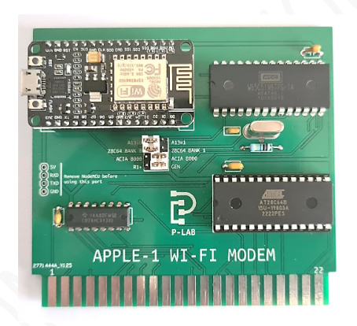

APPLE-1 WI-FI MODEM

Documents hosted here:
PROJECT DOCUMENTATION
User's manual [PDF]
ITA
|
ENG
COMPATIBILITY NOTES for Replicas equipped with 512x4 PROMs ITA/ENG [PDF]
ADDENDUM to hardware version 1.10 for Briel Computers' Replica-1+ compatibility ITA/ENG [PDF]
9600 BAUD operations [PDF]
ITA
|
ENG
PCB version 1.0 9600 BAUD firmware [bin]
PCB version 1.10 9600 BAUD firmware [bin]
External links:
Official Video [YouTube]

P-Lab 2020-23